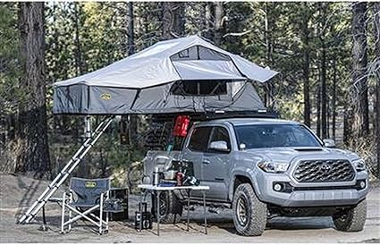
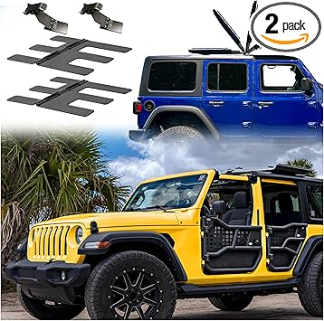
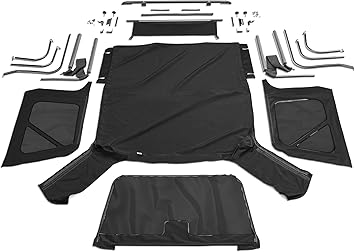
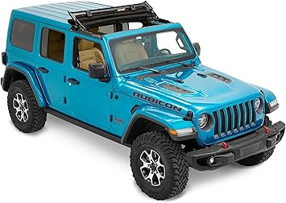
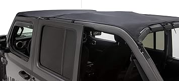

May 2026
Buying jlutops online can feel risky. Mixed reviews, confusing specs, and every brand claiming to be "the best." Here's what actually matters.
Blind brand loyalty — Your favorite brand might not make the best jlutops. Stay open to better options.
Waiting for the perfect deal — If you need jlutops now, buy now. A 10% discount in 3 months costs you 3 months of use.
Going with the cheapest option — Budget jlutops cut corners. Spending 20% more often gets something that lasts 3x longer.
Ignoring the fine print — Some jlutops listings look great until you realize key parts are sold separately.

#3 — Hard Top Freedom Top Panels Storage Bag for All 2007-2025 Jeep Wrangler JK — Editor's pick
#2 — QuadraTop Acoustic Hardtop Headliner Kit Fits Jeep Wrangler JLU JKU Gladiat — Highly reviewed
#5 — Shadeidea JL JT Sun Shade Top Roof Compatible with Jeep Wrangler JLU 2 4 Do — Editor's pick
#1 — Bestop Sunrider for Hardtop Jeep 18-Current JL and Gladiator Black Diamond — Great value
#4 — Jack Boss Hard Top Removal Fits for Jeep Wrangler Compatible All Jeep Model — Highly reviewedThe jlutops space keeps improving, and 2026 is a solid time to buy. See our full rankings at jlutops.com for side-by-side comparisons.